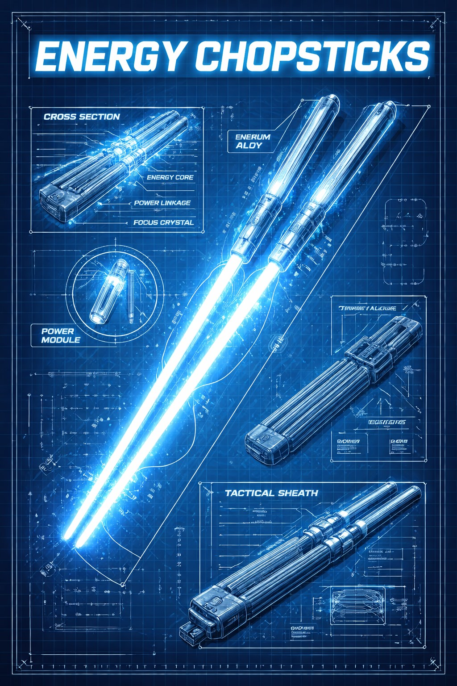
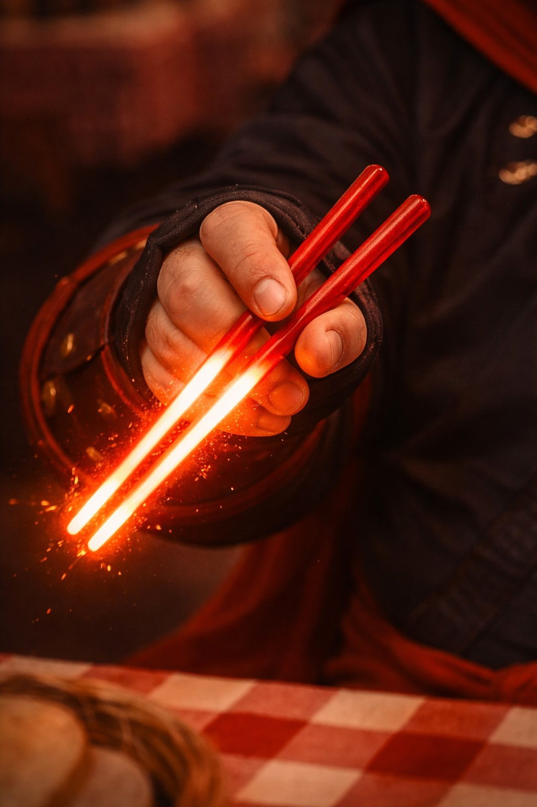

Weapons
Of Dr. Chopsticks
Lightsaber Chopsticks • Built For Battle, Used For Ziti

History of the Energy Chopsticks
Long before anyone thought to weaponize dinnerware, a secret order of monk‑engineers in Neo‑Sichuan Station dreamed of a cleaner, more elegant way to eat noodles in zero gravity. Their answer was the Proto‑Stick: a chopstick forged from condensed plasma, humming gently as it sliced through floating broth droplets. It was brilliant—until someone accidentally set the miso on fire.
Realizing they’d invented something closer to a weapon than a utensil, the order refined their design over centuries. Carbonized dragon bone was replaced with star‑forged alloys. Unstable plasma cores became disciplined “flavor fields” that could sear evil—or a dumpling—with equal precision. Each pair was attuned to its wielder’s energy: righteous warriors produced a steady, noble glow; opportunistic snackers produced a flicker that smelled faintly of garlic.
These weapons became known as Energy Chopsticks—twin beams of contained fury, able to cut through steel, silence a demon, or perfectly bisect a spring roll. Legends tell of battles fought in alleyways where the only light came from twin crimson lines, whistling through the night. The order decreed that only the most disciplined souls, dedicated to defending the weak and preserving balance, would ever wield them.
Which is precisely why nobody understands how Dr. Chopsticks got his hands on a pair.

How Dr. Chopsticks Claimed His Weapon
According to the most credible sources (all of them unreliable), Dr. Chopsticks did not win his Energy Chopsticks in honorable combat. He won them in a midnight all‑you‑can‑eat fusion buffet challenge.
Deep beneath an unassuming strip mall, behind a door marked “Employees Only” and “Absolutely No Customers Beyond This Point,” lay the hidden trial grounds of the monk‑engineers. They had given up selecting noble warriors centuries ago. Instead, they watched security cameras above the sneeze guard, waiting for one true sign of worthiness: someone who would never let good food go to waste.
On that fateful night, Dr. Chopsticks arrived. The staff watched in horror and awe as he navigated the buffet with impossible precision: perfect portion control, zero spillage, and an instinctive understanding of optimal sauce absorption. When he balanced seven plates at once without dropping a single noodle, the ceiling tiles opened and the elders descended on an escalator that had never appeared on the fire code.
“You have passed the Trial of Endless Refills,” they proclaimed.
“What is your desire?”
“Your cheesiest ziti,” he replied. “And maybe… better chopsticks.”
With a solemn nod, they presented him with a relic of their order: twin rods of contained starlight, humming with power and smelling faintly of roasted sesame. Thus, completely by accident, Dr. Chopsticks became the first new wielder of Energy Chopsticks in generations.
Mastery, Misfires, and Moral Purpose
It took seven years, three scorched aprons, and one small electrical fire for Dr. Chopsticks to even begin to master his new weapons.
At first, every attempt to pick up food ended in disaster. Noodles vaporized on contact. Dumplings detonated. One ill‑fated attempt at instant ramen resulted in a perfectly spherical cloud of steam that still haunts local weather radars.
But slowly, he adapted: he learned to dial the energy down low enough to lift a single grain of rice; to flare the tips just enough to cauterize a slice of eggplant; to twirl the chopsticks in a blur of light, deflecting not bullets or demons, but dangerously aggressive meatballs.
Originally, the Energy Chopsticks were meant to defeat evil, severing corruption at its source and carving a path through darkness. In Dr. Chopsticks’ hands, however, they found a different destiny.
Now, their luminous blades are used to test the structural integrity of baked ziti crusts, deliver molten cheese from plate to mouth with surgical precision, and illuminate dimly lit restaurants like sacred tasting halls. He still tells himself the mission is the same: protect the innocent, fight injustice, uphold balance.
It’s just that, in his world, “evil” often takes the form of under‑seasoned sauce, rubbery pasta, or tragically insufficient cheese. The universe forged Energy Chopsticks to battle darkness. Dr. Chopsticks uses them to sample ziti—and somehow, that still feels like a kind of justice.